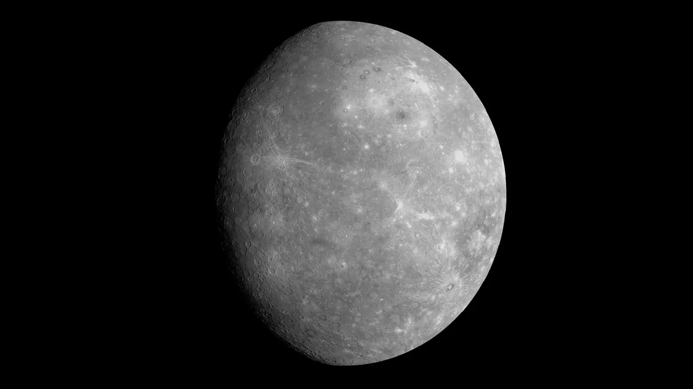
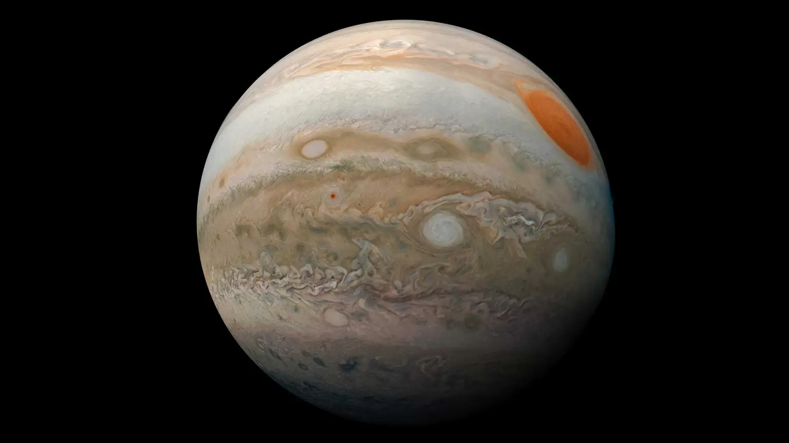

Visible Planets without a telescope
Mercury
Mercury is the planet nearest to the Sun, and the smallest planet in our solar system.
Venus
Venus is the second planet from the Sun, and the sixth largest planet.

Mars
Mars is the fourth planet from the Sun, and the seventh largest planet.

Jupiter
Jupiter is the fifth planet from the Sun, and the largest planet in our solar system.
Saturn
Saturn is the sixth planet from the Sun, the second largest planet in our solar system.